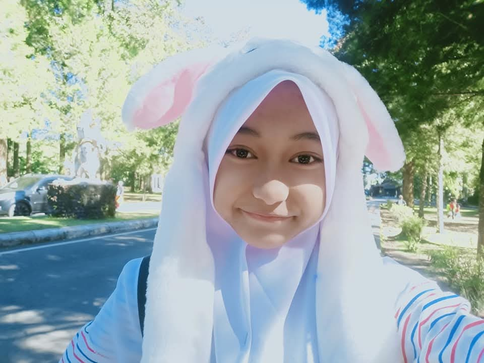

Sabar yaa, website ini baru bisa dibuka pas hitungan mundur di bawah habis!
✨ Ketuk amplopnya buat buka surat! ✨
Kepada seseorang yang pernah menjadi bagian dari hari-hari kecilku.
Ada hal-hal yang tidak pernah benar-benar selesai meski waktu telah berlalu. Seperti sebuah cerita yang halamannya terus bertambah, tetapi tokoh-tokohnya tetap tinggal dalam ingatan.
Dahulu, dunia kita tidak lebih luas dari halaman sekolah, lorong kelas, dan percakapan sederhana. Kita belum mengenal betapa rumitnya kehidupan, belum tahu bahwa tumbuh dewasa berarti belajar menerima banyak hal, termasuk jarak.
Lalu waktu berjalan.
Kita tumbuh dan menempuh jalan masing-masing. Kini, ada jarak yang membentang di antara dua tempat: Malang dan Bali. Dua kota yang menyimpan kehidupan kita dengan kesibukan dan cerita yang tak selalu bisa dibagi bersama.
Lucu, bukan? Dulu, untuk bertemu, kita hanya perlu menunggu datangnya jam sekolah. Sekarang, bahkan untuk bertukar kabar, terkadang kita harus mencuri waktu.
Namun, aku percaya bahwa tidak semua yang jauh akan menjadi asing. Ada orang-orang yang tempatnya tidak ditentukan oleh seberapa sering kita bertemu, melainkan oleh seberapa lama mereka menetap dalam ingatan.
Dan kamu adalah salah satunya.
Terima kasih telah menjadi bagian dari masa kecilku. Dari sekian banyak orang yang datang dan pergi, aku bersyukur semesta pernah mempertemukan kita.
Aku tidak tahu seperti apa kehidupan kita beberapa tahun mendatang. Mungkin kita semakin sibuk, semakin jauh, atau memiliki dunia yang berbeda. Tetapi aku berharap, sejauh apa pun langkah kita, akan selalu ada ruang untuk mengingat bahwa kita pernah tumbuh bersama.
Oh, hampir saja aku lupa.
Di antara sekian banyak hari yang berlalu, rupanya ada satu hari yang istimewa. Hari ketika dunia kedatangan seseorang yang kelak menjadi bagian berharga dari cerita masa kecilku.
Selamat naik level, karakter utamaku!
Semoga hidup memperlakukanmu dengan lembut. Semoga hal-hal baik menemukan jalan menuju dirimu, segala doa yang diam-diam kamu langitkan perlahan menemukan jawabannya, dan di game selanjutnya bisa melewati dengan lancar meskipun pasti banyak monster-monster menghadangmu — gapapa, injek aja kayak di game mario bros wkwk.
Jangan terlalu keras kepada dirimu sendiri. Kamu tidak harus selalu kuat atau tahu ke mana harus melangkah. Tumbuhlah dengan caramu sendiri, sebab setiap orang punya waktunya untuk mekar.
Jika suatu hari nanti kita kembali duduk berhadapan, entah di Malang, Bali, atau tempat yang belum pernah kita bayangkan, semoga kita masih bisa tertawa seperti dua anak kecil yang dahulu belum tahu betapa cepatnya waktu berlalu.
Sampai saat itu tiba, jagalah dirimu baik-baik.

sekali lagi, makasi udah hadir dalam hidup Illa! 📸
Geser dan cubit layar untuk memutar galaksi!